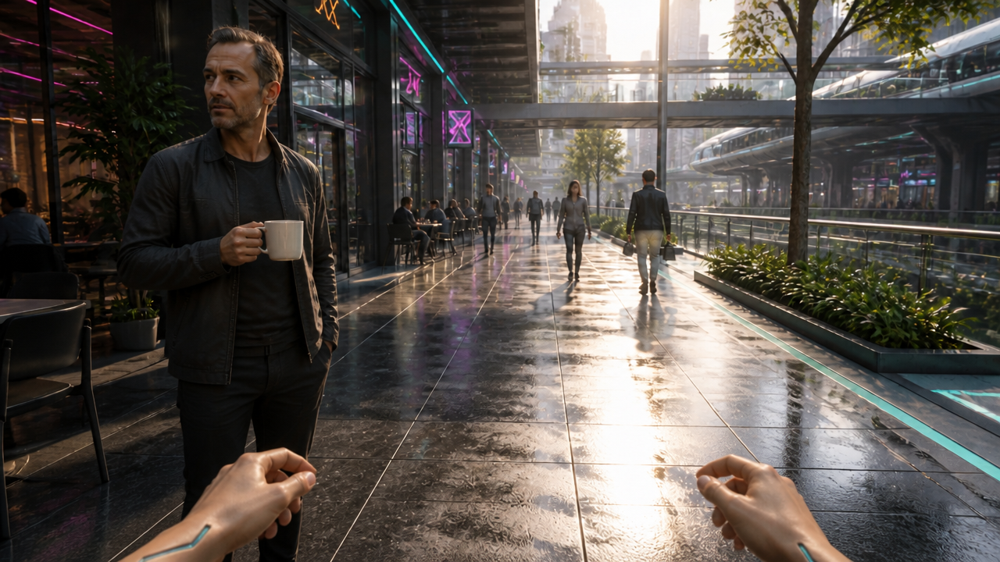
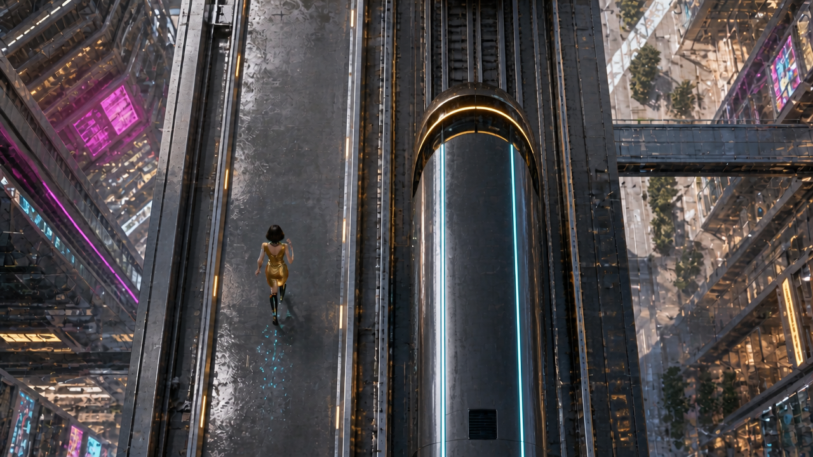
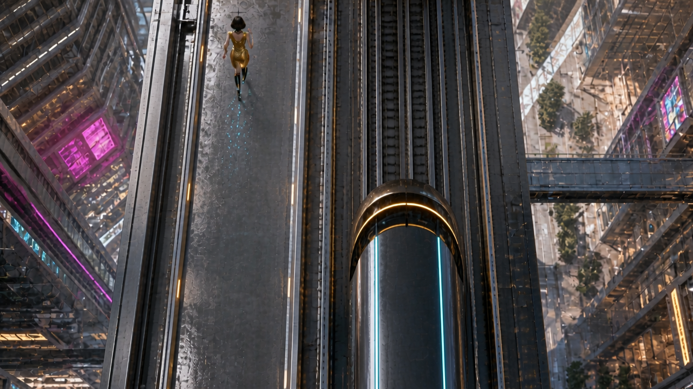

08 — Intelligence / city terrace HUD
Raised terrace in the station district

Visible NEURAL LINK and INTERCEPT ROUTE HUD, rail target bracket and cyan pedestrian route. Terrace, skyline, elevated train, glass/metal and gold/cyan/magenta lighting now match the station district. First-person skin hand with narrow chrome accents.
What still needs testing
- HUD is baked into this concept still; final clean plate and tracked graphic layers need planning before motion.
- Static route graphic is a composition proposal, not a verified navigable path.
- Motion, hand cadence and optical HUD stability are untested.
09 — Coffee / one mug, before the drop
Futuristic café arcade

Exactly one white mug is held upright by the cafe patron; the airborne duplicate and splash are removed. Patron is now a distinct middle-aged man, and first-person hands are lowered into a pre-catch position. Cafe architecture, lighting and elevated transit remain consistent with the source city.
What still needs testing
- The still does not establish the later accidental slip, camera transition or catching action.
- Both hands are visible; alternating running cadence must be handled in motion.
10 — Strength / intact doors before bending
Transit service entrance

Both door leaves now have straight, intact inner edges with a narrow vertical opening. The earlier crumples and wide mid-bend gap are gone. Paired first-person hands grip near the center; natural skin and narrow chrome/cyan inlays remain.
What still needs testing
- Grip contact and eventual metal bending must remain coherent during animation.
- Centimetre-scale gap and real-world hand dimensions are prompt targets, not measured physical quantities.
11 — Speed / avenue under elevated rail
Avenue beneath elevated rail

Open central avenue with dense glass towers, skybridges, elevated train and consistent daylight palette. Close bollards and paving provide foreground references for future acceleration. First-person hands retain skin and cyan/chrome accents.
What still needs testing
- Static image cannot demonstrate speed; acceleration must come from actual foreground translation.
- Both hands are extended similarly rather than alternating in a sprint pose.
- Train travel direction is not established by this side-view still; motion prompt must preserve parallel travel.
12A — Overhead / corrected train direction
Elevated urban rail and separate running lane

Train nose now points toward image-top and body extends downward, matching Riley's upward heading. Riley remains behind the nose in a physically separated left lane. Rail alignment, gold outfit, city architecture and overall overhead framing are retained.
What still needs testing
- The generated nose is higher in frame than the numeric prompt target; the ending uses camera advance to retain space for a readable pass.
- A still establishes heading and staging but cannot prove train or runner motion.
12B — Overhead / clear completed pass
Same elevated urban rail and separate running lane

Train keeps its upward-facing nose and vertical rail alignment. Riley stays in the separate image-left lane and her entire body is ahead of the train nose, with a clear gap after her trailing boot. Same gold outfit, body scale, train livery and shared-city lighting are retained. Both subjects remain visible; there is one Riley and one train.
What still needs testing
- Stills establish endpoint staging only; the animated pass, speed and coherent camera/background translation remain to be tested.
- Riley ends close to the upper frame edge, with her full head visible; retain enough headroom during motion.